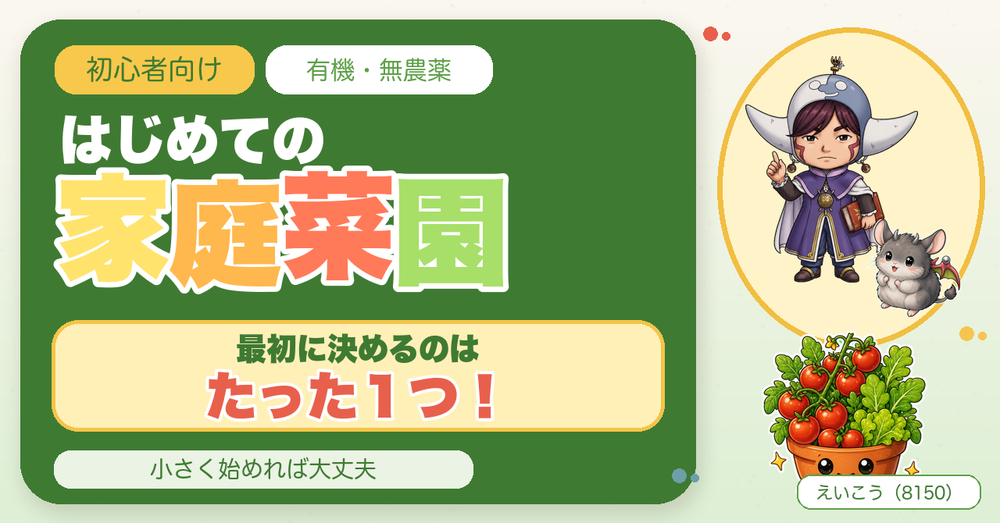
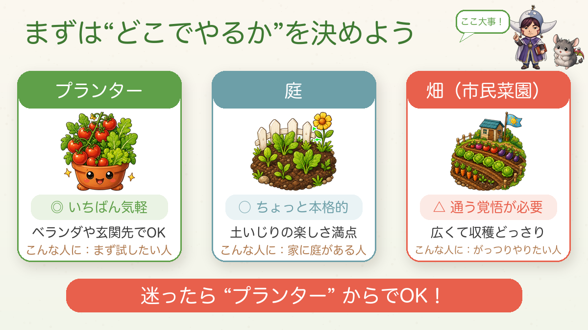
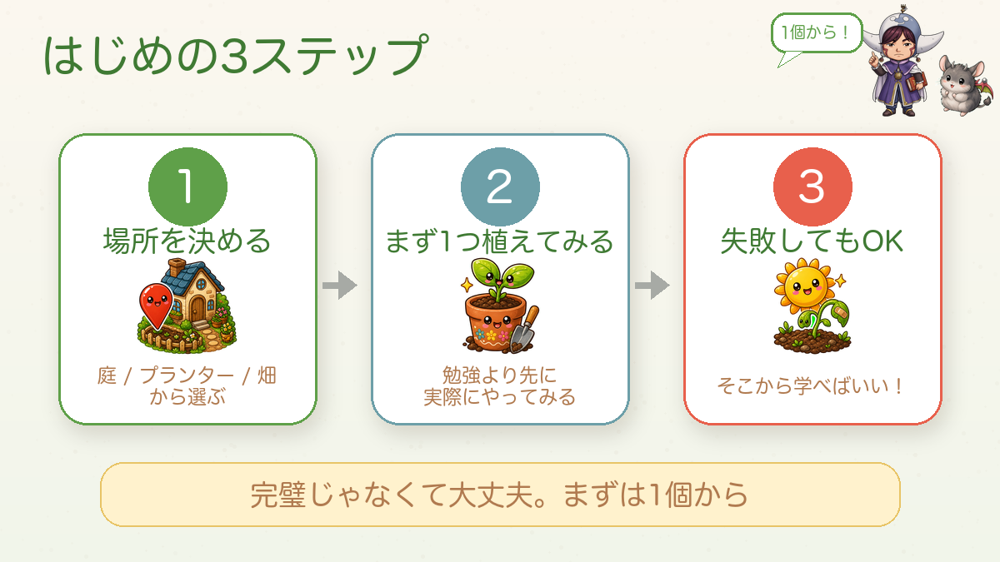
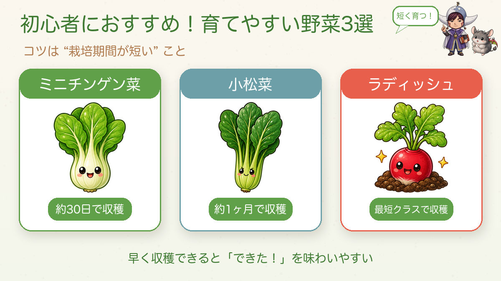
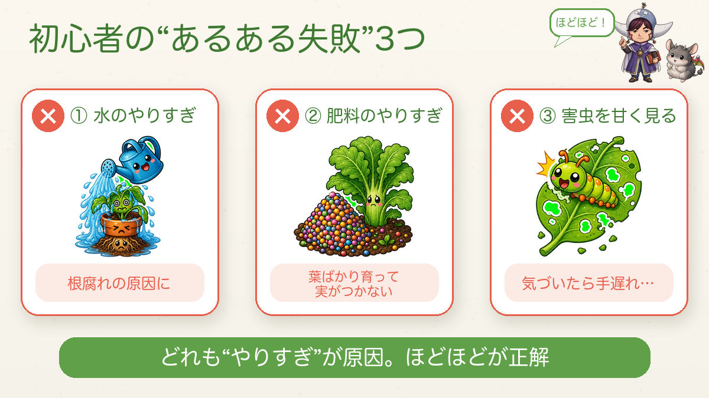
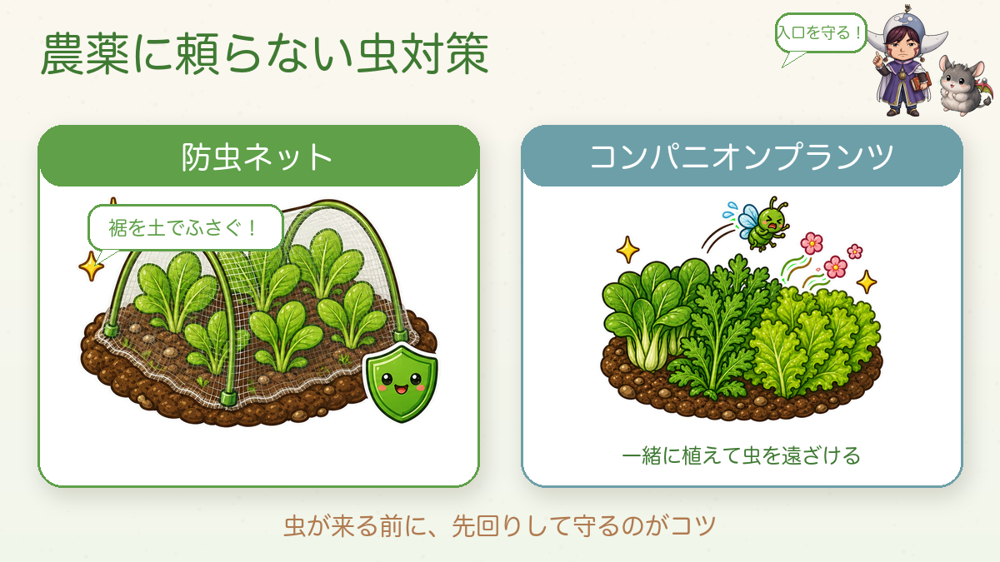

【初心者向け】はじめての家庭菜園🌱 まず決めるのはたった1つ

🗨️「家庭菜園、やってみたいけど何からやればいいの？」
🗨️「すぐ枯らしそうで不安…」
🗨️「道具とか、いっぱい揃えなあかんのかな？」
どうも、8150（えいこう）です🌱 家庭菜園歴8年、有機・無農薬でやってる、野菜と理科が好きな人間です。
最初に言っておきますね。家庭菜園で最初に決めることは、たった1つだけです。「えっ、それだけ？」って感じですよね。でも、ほんまにそれだけ。
この記事では、その1つと、初心者がつまずくポイント、そして私が実際に使ってる道具を正直にお話しします。むずかしく考えなくて大丈夫。私も有機・無農薬でやってますが、コツを押さえれば初心者でもいけます☺️
まず決めるのは「どこでやるか」、これだけ
苗とか土とか、その前に。いちばん最初に決めてほしいのは「どこでやるか」です。『プランター』『庭』『畑（市民菜園）』のどれにするか。ここで、この先の進め方がガラッと変わってきます。迷ったらまずはプランターで全然OK。

私が使ってるプランター（正直レビュー）
プランターは大きめ・スリット入りを選ぶのが正解です。野菜は見えない土の中で根をぐんぐん張るので、小さいと育ちがイマイチに。私は底に穴がたくさん空いたスリットタイプを使ってますが、鉢底石がいらない＆水はけが良くて、ずぼらな私でも根腐れさせにくいです。
私が選ぶならこのあたり。プランターは大きめ、培養土は無農薬に合わせて“有機”タイプを選ぶのがポイントです。


↑貯水機能＋支柱フレーム付きで、水やりがラク。初心者の最初の1つにちょうどいいサイズ（40L）です。

↑無農薬でいくので、培養土も“有機”タイプを。約25Lでプランター1つ分の目安です。
畑もプランターも無い人は、まずこれ👇 ベビーリーフのミックス種なら、書類トレイでもサラダがすぐ穫れます。

はじめの3ステップ

やることは「①場所を決める ②まず1つ植えてみる ③失敗してもOK」の3つ。大事なのは2番。本や動画で勉強するより、1個植えてみるほうが何倍も早く上達します。私が理科を好きになったのも、先生が教科書じゃなく実物の昆虫を見せてくれたから。実物で学ぶと一気に面白くなるんですよね。
最初の1つは、「育てやすい＝栽培期間が短い」野菜を。ミニチンゲン菜・小松菜・ラディッシュあたりは1ヶ月くらいで穫れて、「できた！」をすぐ味わえます。

- 小松菜・ラディッシュ・ミニチンゲン菜の種 🔗リンク：種
初心者がやりがち、3つの「あるある失敗」

① 水のやりすぎ…表面が乾いてても土の中は湿ってることが多い。やりすぎは根腐れの元。初心者がまず鍛えるべきは「水やりを我慢する力」かも(笑)
② 肥料のやりすぎ…不安で足したくなるけど、入れすぎると味が落ちたり葉ばかりに。追肥は“ひとつまみ”で十分。
③ 害虫を甘く見る…無農薬ならここが本番。
無農薬の必須アイテム：防虫ネット（買ってよかった）
農薬を使わない私にとって、防虫ネットは一番の相棒。来てから対処するより、最初から物理的に入れないのが一番ラク。ポイントは裾を土でしっかりふさぐこと。もう1つ、コンパニオンプランツ（春菊やリーフレタスを一緒に植える）も虫を遠ざけてくれます。

- 防虫ネット（幅180cm） 🔗リンク：防虫ネット
- 菜園ポール／アーチ支柱＋固定クリップ 🔗リンク：支柱セット
正直に言うと、無農薬は農薬を使うより難しいです。でも、だからこそ価値がある。私はそう思ってやっています。
（プランター以外の道具＝移植ごて・じょうろ・ハサミなどは、次回「最初に揃えるものリスト」でまとめて紹介します🌱）
私の「あるある失敗」体験談
えらそうに言ってる私も、めちゃくちゃ失敗してます。久しぶりに畑に行ったら全部虫に食われてて、枯れてるわ実も食われてるわで「もう最悪や…」と😂 でもそこから「毎日ちょっと顔出さなあかんな」と学びました。失敗が、いちばんの先生です。枯らしても落ち込まないでくださいね。
まとめ
- まず「どこでやるか」を決める（迷ったらプランター）
- 勉強より先に1個植える（育てやすい＝栽培期間が短い野菜）
- 失敗してOK。そこから学ぶ
- 無農薬なら防虫ネットは必須
まずは小さい鉢ひとつから。土をさわってると、それだけでけっこう気持ちええですよ🌱